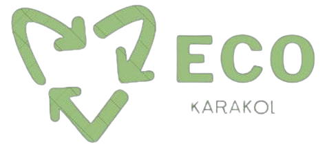

Приветствуем вас на ЭкоКаракол – вашем источнике вдохновения для сохранения окружающей
среды и поддержки идеи переработки! Мы рады представить вам нашу новую инициативу – систему бонусов,
которая не только поможет вам внести свой вклад в сохранение чистоты природы, но и наградит вас за это.


Теперь вы можете принести чистый и отсортированный мусор – стекло, бумагу, металл и пластик – в наши
пункты приема, и за каждый килограмм такого мусора вы будете вознаграждены Biocoins. Каждый Biocoin
эквивалентен 3 кыргызским сомам, что делает ваше участие в этой программе еще более привлекательным.
Чтобы начать накапливать Biocoins, вам просто необходимо зарегистрироваться на нашем сайте. После этого
ваши бонусы будут накапливаться на вашем личном счете, и вы сможете использовать их для получения
различных приятных бонусов и скидок от наших партнеров.
Присоединяйтесь к нам в этом замечательном деле – вместе мы сможем сделать мир лучше и сохранить его для
будущих поколений. Посетите наш сайт прямо сейчас и начните делать свой вклад в охрану окружающей среды
с ЭкоКаракол!